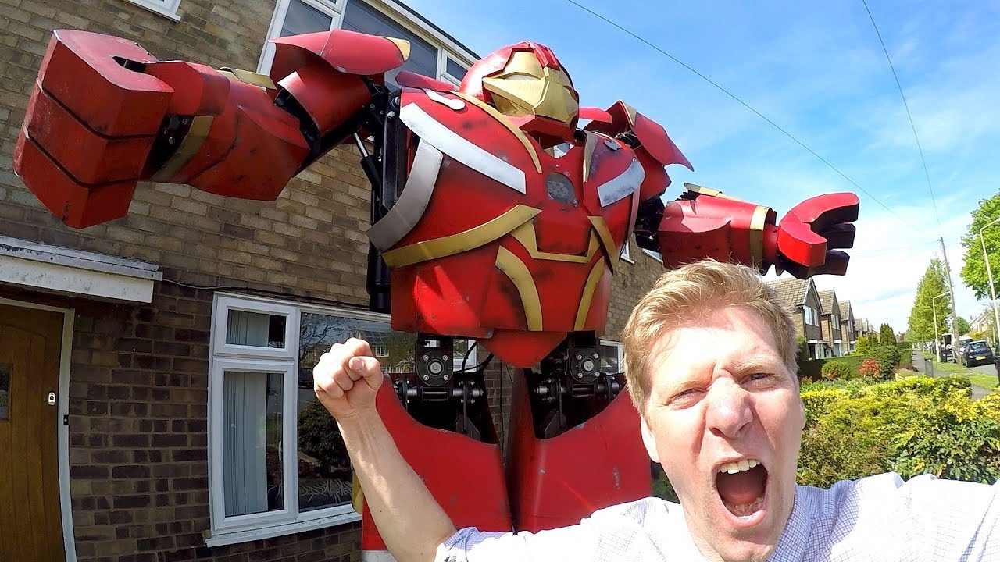
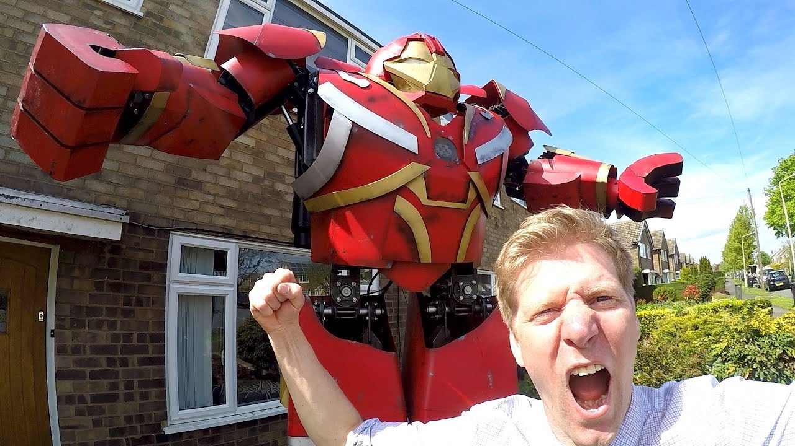
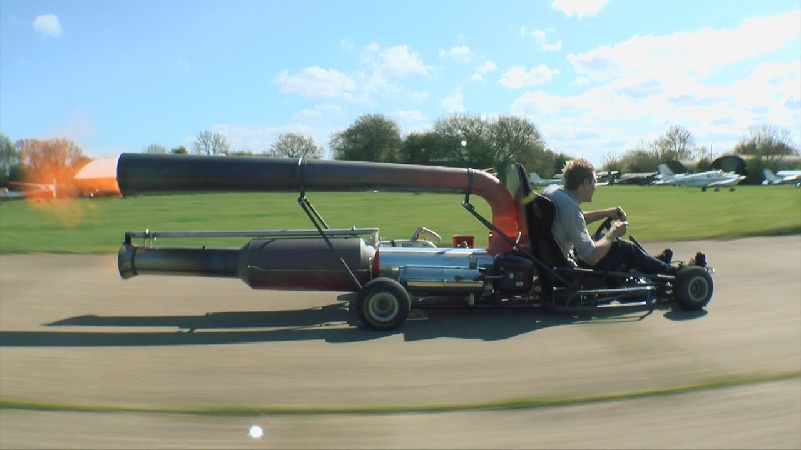
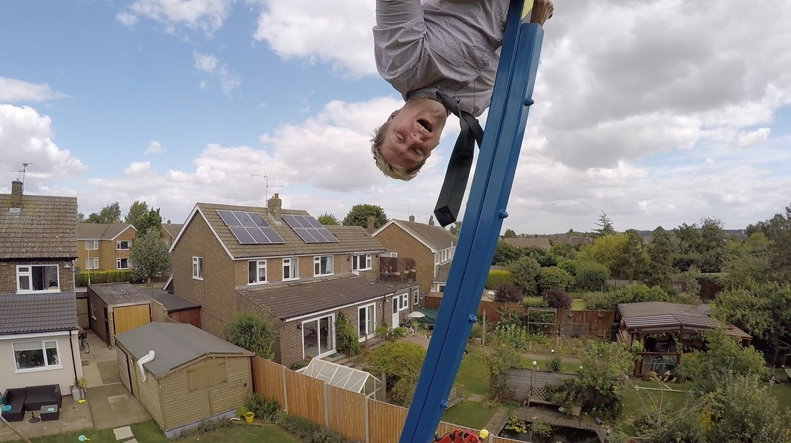
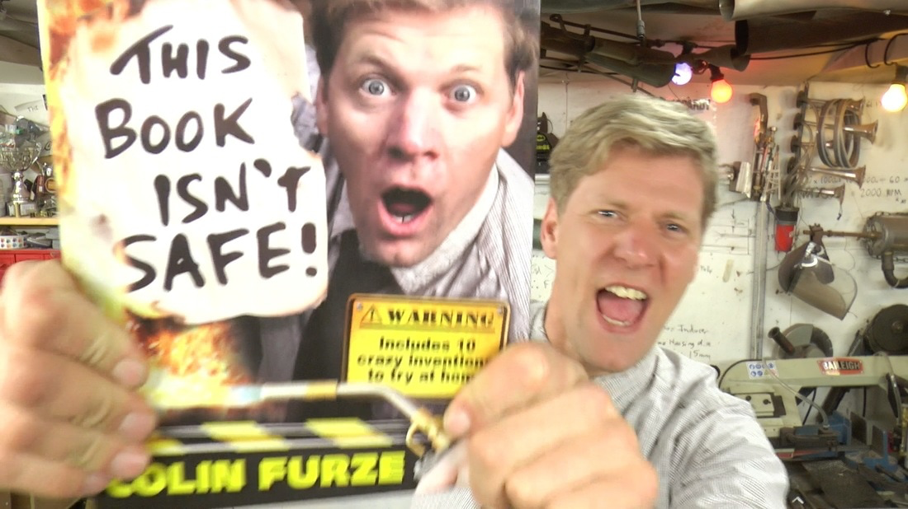
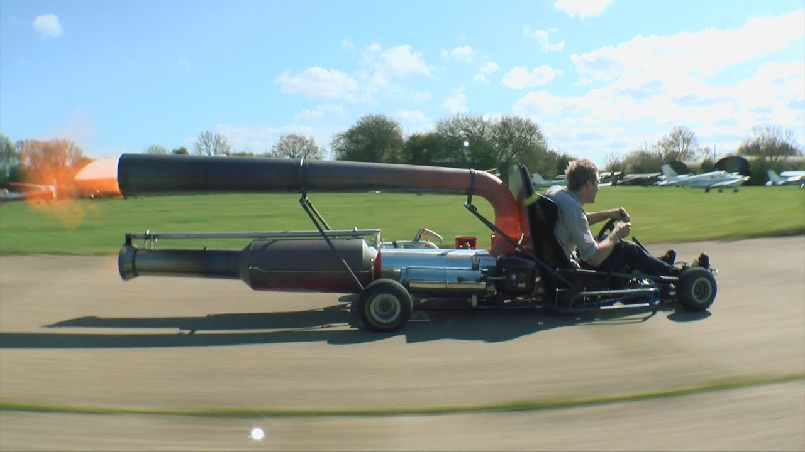
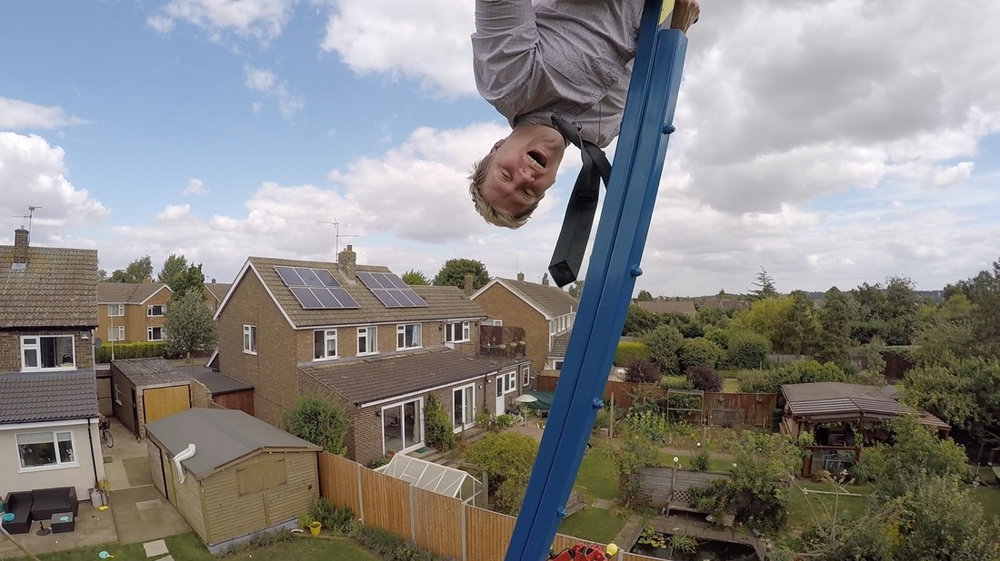
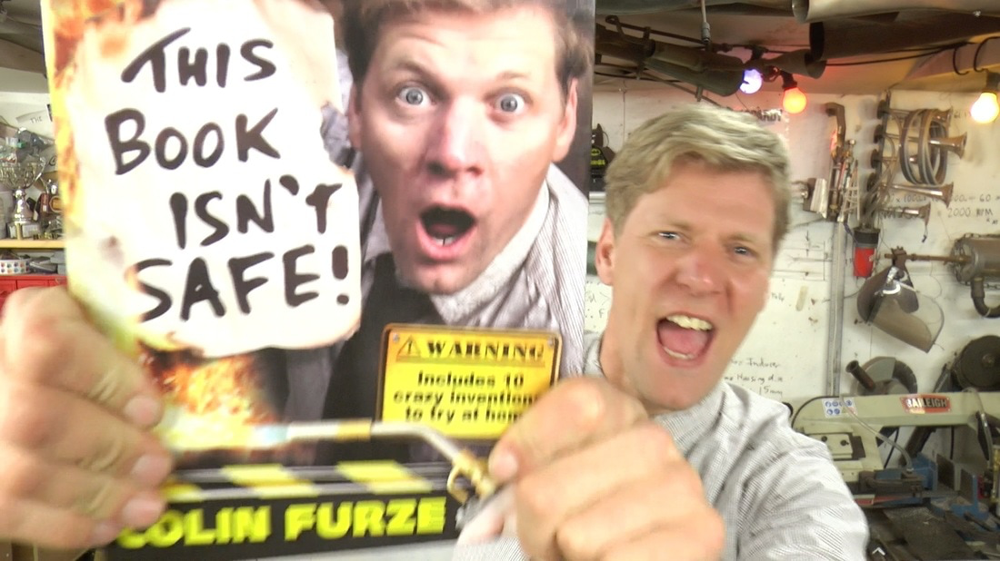

 





Welcome to the Colin Furze Internet Shed!
Hi, I'm Colin Furze, a British shed inventor and video maker. My aim is to make cool and crazy contraptions and share them with the world to perhaps inspire YOU to get on and make something.
To find out about my inventions and other contraptions visit the Projects page, here you will find photos, information and the videos.
If you're new to all things Furze then just have a browse and enjoy.
Browse VideosColin Furze Merch
Furze Merchandise is available from my online shop. I have carried out rigorous shed wear testing on them and have my brew at least 5 times a day in my mug!
You also have the chance to get your hands on a signed copy of my book: This Book Isn't Safe!
I have signed a limited number of books which make great Christmas presents, to inspire kids to get making and creating.

Latest Video Series
I've made the StarWars Landspeeder, check out this AWESOME build and show video below!
 Fabricating a Metal Landspeeder that DRIVES
28 Nov 2019
Together myself and eBay Uk are building our 3rd Star Wars creation, we've made a huge AT-ACT Playhouse, a FULL SIZE Tie Silencer and now to celebrate the release of Star Wars: The Rise of Skywalker - Luke Skywalker’s Landspeeder from the first film, A New Hope.
Fabricating a Metal Landspeeder that DRIVES
28 Nov 2019
Together myself and eBay Uk are building our 3rd Star Wars creation, we've made a huge AT-ACT Playhouse, a FULL SIZE Tie Silencer and now to celebrate the release of Star Wars: The Rise of Skywalker - Luke Skywalker’s Landspeeder from the first film, A New Hope.
 JET POWERED STAR WARS LANDSPEEDER
8 Dec 2019
It's Finished and it looks a beauty so we had to chuck a few Jet engines in for good measure.
View Series Page
JET POWERED STAR WARS LANDSPEEDER
8 Dec 2019
It's Finished and it looks a beauty so we had to chuck a few Jet engines in for good measure.
View Series Page